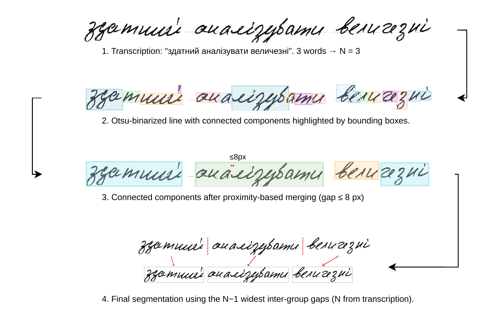
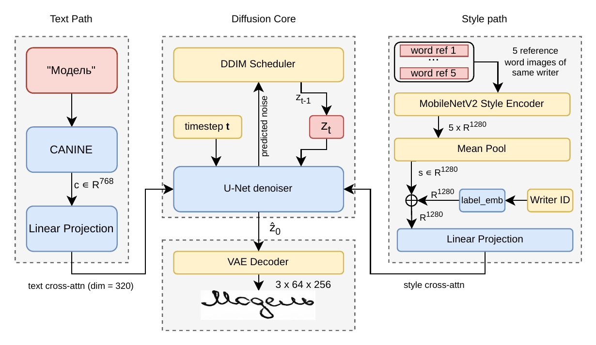
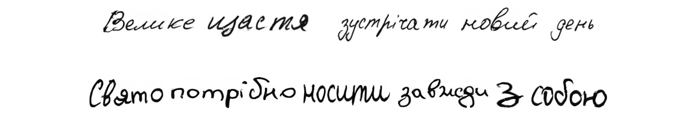
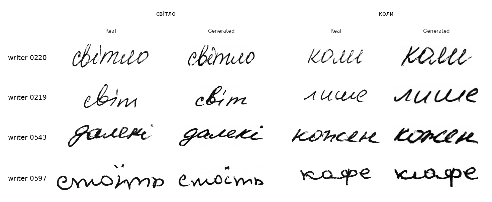
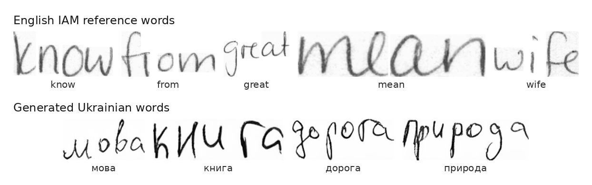
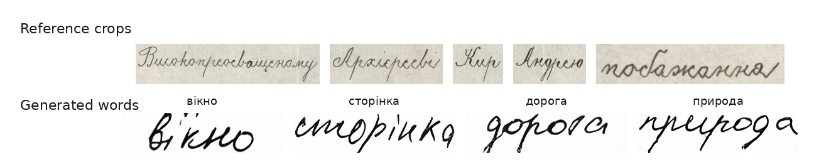
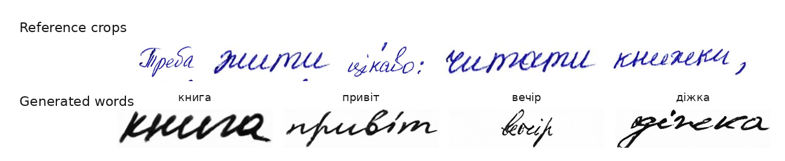

1 Ukrainian Catholic University, Lviv, Ukraine
2 National University of "Kyiv-Mohyla Academy", Kyiv, Ukraine
Handwritten text generation (HTG) conditioned on writer style has been widely studied for Latin scripts, but remains underexplored for low-resource and non-Latin writing systems, leaving open how well existing models generalise beyond the Latin domain. Cyrillic, particularly Ukrainian, lacks both large-scale writer-labeled datasets and empirical evidence of such generalisation. To address this gap, we construct a Ukrainian handwritten word dataset of 126,177 images from 308 writers using connected-component segmentation, quality filtering, and targeted oversampling of underrepresented Ukrainian characters.
We retrain DiffusionPen[1], a MobileNetV2 triplet-loss style encoder with a CANINE-conditioned latent diffusion U-Net, on this dataset without architectural modification, testing direct transfer from Latin to Cyrillic. We evaluate cross-domain style transfer in three settings: cross-lingual transfer from IAM[6] English samples, zero-shot transfer to an early 20th-century Ukrainian manuscript, and few-shot imitation of contemporary writers. The model produces legible, style-consistent word images, indicating that few-shot latent diffusion models generalize beyond the Latin-script domain. We release the dataset, trained models, and evaluation protocol as a reproducible benchmark for writer-aware Cyrillic HTG, providing a foundation for extending stylized HTG to other underrepresented writing systems.
No Ukrainian word-level handwriting dataset with writer labels existed prior to this work. We derive one from the UkrHandwritten line-level corpus[4] (37,111 lines, 331 writers) through a four-stage pipeline: pre-segmentation artifact removal with a NAFNet restoration network, Otsu binarization, connected-component proximity merging (gap ≤ 8 px), and N−1 widest-gap word boundary selection. The method achieves 95.7% boundary accuracy on a 500-line evaluation subset, compared to 71.7% for vertical-projection baselines. After quality filtering and oversampling of rare letters (ф, ї, Щ, Є, Ц, і), the final dataset contains 126,177 word images from 308 writers.

We adopt DiffusionPen[1] without architectural modification. The model is a conditional latent diffusion model operating in the 4×8×32 latent space of a frozen Stable Diffusion v1.5[8] VAE. At each denoising step, a U-Net receives three conditioning signals: (1) a text embedding c ∈ ℝ768 from a CANINE[7] character-level encoder, projected to dimension 320; (2) a style embedding s ∈ ℝ1280 from a frozen MobileNetV2 style encoder trained with triplet loss, mean-pooled over five reference images; and (3) a learned writer label embedding summed with s. Both conditioning signals are injected via cross-attention.

The model is trained for 200 epochs on the 126K dataset with the standard LDM noise-prediction objective on a single RTX 4090 GPU (TF32, batch size 24). Classifier-free guidance uses pdrop = 0.2 for text; style conditioning is never dropped. Inference uses 50 DDIM steps with CFG scale ω = 5.0.
Individual word images are assembled into sentence strips via baseline alignment (span-based body-row detection), brightness normalization, and real handwritten punctuation marks sampled from a bank of 500 training-corpus marks.
All generated images are 64×256 pixels. Evaluation uses three metrics: Fréchet Inception Distance (FID) on 5,000 matched writer-word pairs across all 308 writers; Learned Perceptual Image Patch Similarity (LPIPS) on the same pairs; and Character Error Rate (CER) via a pretrained Cyrillic TrOCR model on 4,928 generated words.
| Metric | Value |
|---|---|
| FID (5,000 samples, 308 writers) | 23.09 |
| LPIPS overall mean | 0.367 |
FID 23.09 is comparable to DiffusionPen on English IAM (~20–25), indicating Ukrainian generation quality is on par with Latin-script state of the art.
| Model | Dataset | FID ↓ | CER ↓ |
|---|---|---|---|
| This paper | Ukrainian | 23.09 | 16.0% |
| DiffusionPen[1] | IAM | 22.54 | 6.94%* |
| WordStylist[2] | IAM | 22.74 | — |
| GANwriting[3] | IAM | 43.97† | — |
Cross-paper values are not directly comparable (different datasets, scripts, and evaluation protocols). *CER from HTR imitation on IAM. †FID as reported in DiffusionPen.


The triplet-loss style encoder learns a metric space based on visual stroke properties rather than writer identity labels. This enables meaningful style embeddings from handwriting samples entirely absent from training, including samples in other scripts and historical documents. We test this capability in three settings of increasing domain shift.
Five reference word images from a single IAM[6] English writer are passed through the style encoder; the resulting embedding generates Ukrainian words. The output visibly reproduces the source writer's stroke weight, angle, and spacing.

Reference images are sourced from a digitised early 20th-century Ukrainian manuscript archived by the Central State Historical Archives of Ukraine. The generated words adopt the manuscript's calligraphic qualities: wider strokes, more formal letter proportions, and reduced inter-letter connectivity, while still producing modern Ukrainian character forms.

Reference images are drawn from the RUKOPYS dataset[5], whose writers do not appear in the training set. The generated words capture the unseen writer's slant, stroke weight, and letter shapes without any fine-tuning, confirming that the five-shot style encoding mechanism generalises to new writers at inference time.

@inproceedings{ukrdiffusion2026,
title = {Diffusion-Based Ukrainian Handwritten Text Generation
with Cross-Domain Style Transfer},
author = {Ahitoliev, Andrii and Berezin, Pavlo},
booktitle = {Proceedings of the International Conference on
Information and Communication Technologies in
Education, Research, and Industrial Applications
(ICTERI)},
year = {2026}
}